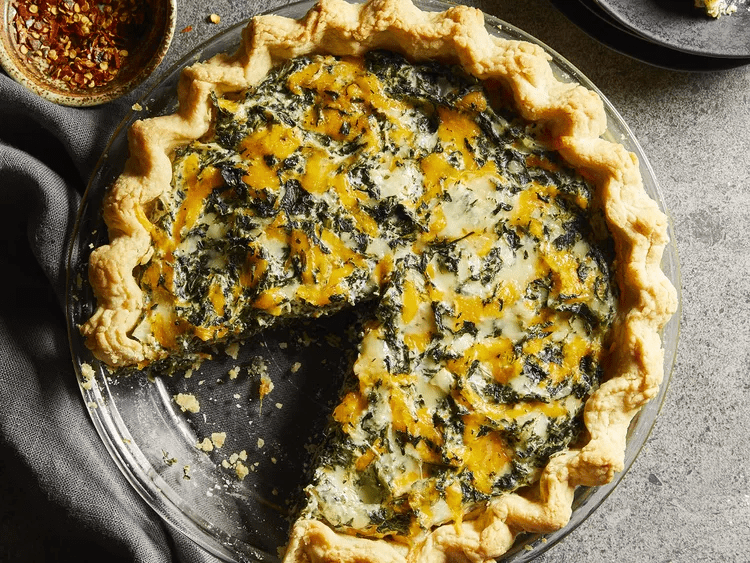

Tofu Quiche
Back

Description
Made with tofu instead of eggs, this quiche is always a hit!
Ingredients
- 8 oz firm tofu
- 1/3 cup 1% milk
- 1/2 teaspoon salt
- 1/2 teaspoon black pepper
- 2/3 cup shredded Cheddar cheese
- 1/2 shredded Swiss cheese
- 1/4 cup diced onion
- 1 teaspoon minced garlic
- 1 9 inch unbaked pie crust
Steps
- Preheat the oven to 350 degrees F (175 degrees C).
- Blend tofu, milk, salt, and pepper in a blender until smooth, adding more milk if necessary.
- Combine spinach, Cheddar, Swiss, onion, and garlic in a medium bowl. Add tofu mixture and mix until well combined; pour into pie crust.
- Bake in the preheated oven until set in the center and golden brown on top, about 30 minutes. Let stand for 5 minutes before cutting into six generous slices.